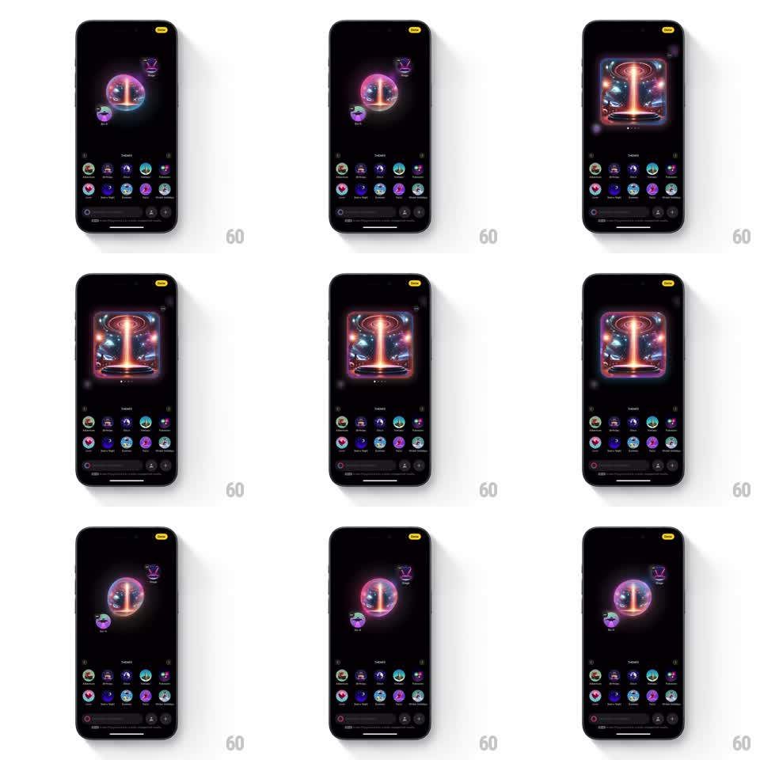

Media
Frame-by-frame

Rebuild this interaction 1:1: Apple Image Playground's theme switch - tapping a floating theme bubble scales it up into the center orb while the previous orb shrinks and orbits off to the side.

Rebuild this interaction 1:1: Apple Image Playground's theme switch - tapping a floating theme bubble scales it up into the center orb while the previous orb shrinks and orbits off to the side. ## Integration Integration: stack-agnostic spec - springs given as stiffness/damping, timed motions as duration + curve; map every value to your framework and animation library of choice. ## Scene The dark Image Playground canvas: a large glowing iridescent orb at center holding the active theme, with smaller theme bubbles floating around it (a trophy bubble upper-right, a purple bubble lower-left). A theme grid and prompt bar sit at the bottom. Tapping a floating bubble swaps the themes: the tapped bubble grows into the center orb and the old orb shrinks into a floating bubble. When generation completes, the orb briefly expands into the finished image card (a neon space portal scene) with rounded corners, then returns to orb view. ## Motion spec Pattern: orbiting theme scale swap, ~700ms per swap. - On tap, the tapped bubble scales from its orbit position to center stage (spring stiffness 300 damping 22), growing from bubble size to full orb size along a short arc. - Simultaneously the current orb shrinks and glides out to the tapped bubble's old orbit slot (spring stiffness 300 damping 24), the two paths crossing mid-flight. - The center orb's surface churns as the new theme applies: internal swirls and hue shift over 500ms. - On generation, the orb flashes and expands into the rounded image card (spring stiffness 280 damping 22); tapping back collapses the card into the orb. - Orbit bubbles idle with a gentle float (plus/minus 6px, 3s periods, offset phases). ## Calibration - The swap is a direct exchange of positions and sizes - the two elements trade places, not fade. - The bottom theme grid stays static; only the floating bubbles participate. ## Reduced motion Bubbles crossfade into their new positions. ## Don't miss - The orb keeps its internal imagery during the shrink - it reads as the same object moving, not two objects swapping. - The image card expansion and the orb share one center point.